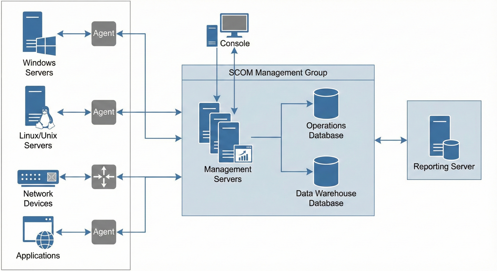
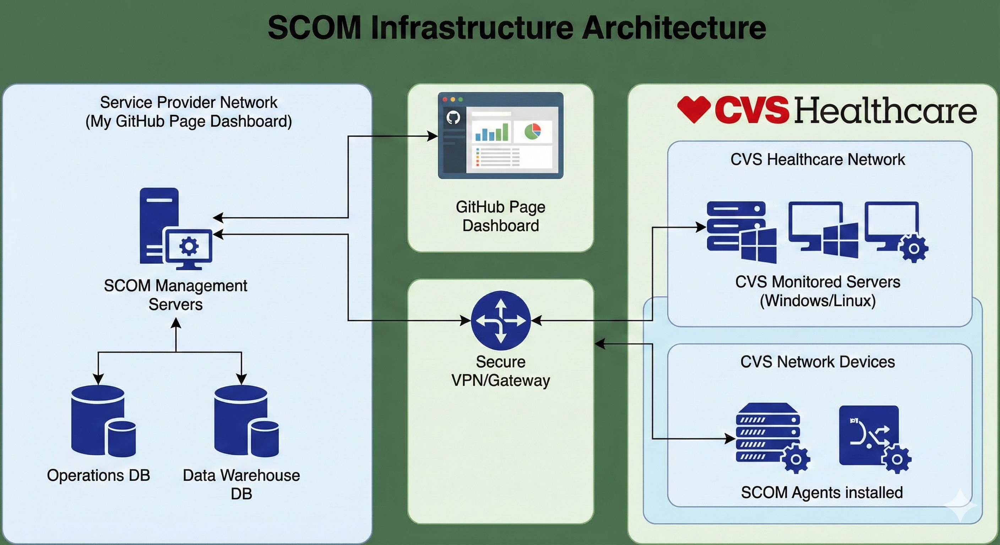
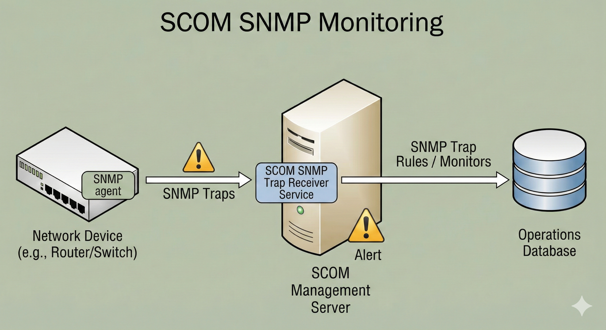
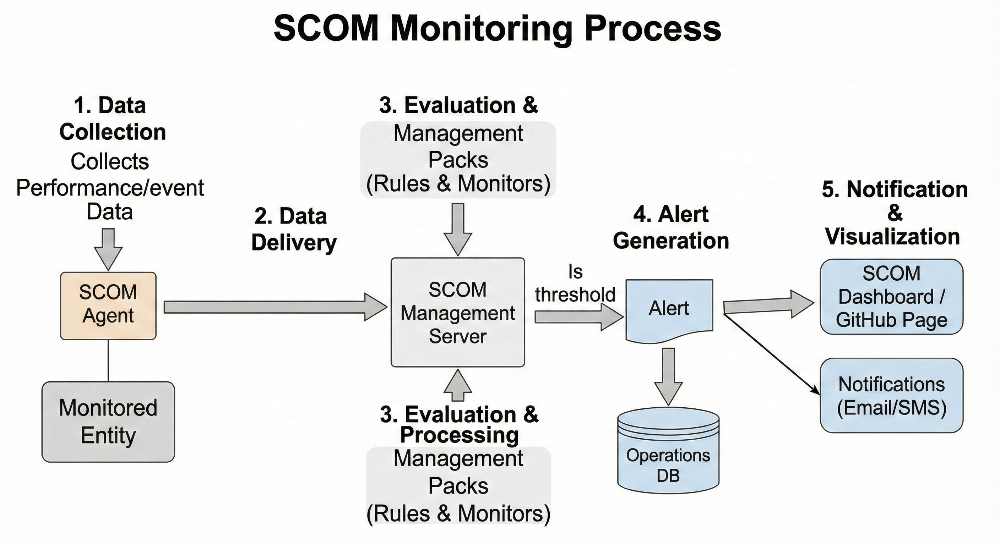

Cloud & Infrastructure Engineer | Windows | Azure | Networking | Monitoring
With 13+ years of experience in Cloud, Windows Infrastructure, Network Operations, and Monitoring, I specialize in designing scalable systems, optimizing performance, and implementing enterprise-grade solutions across Windows, Azure, SCOM, VMware, and hybrid cloud platforms.
Operating Systems: Windows Server, DNS, DHCP, AD, WSUS
Cloud Platforms: Azure, AWS, GCP
Monitoring & Tools: SCOM, SCCM, ServiceNow, VMware
Messaging & Collaboration: Skype for Business, Lync, Exchange
A centralized monitoring solution for Windows, network devices, and CVS Healthcare infrastructure using SCOM 2019/2022.
View Project →Enterprise-grade monitoring solution designed for CVS Healthcare using System Center Operations Manager (SCOM).
The SCOM Monitoring Dashboard provides centralized visibility into the health, performance, and availability of CVS Healthcare’s Windows Servers, Linux/Unix servers, SQL databases, network devices, and business applications.
This solution integrates custom management packs, SNMP monitoring, agent-based telemetry, dashboard visualizations, and automated alerting—offering a unified operational view to Infrastructure, Cloud, and NOC teams.

This architecture shows how various monitored entities forward health metrics and performance data to the SCOM Management Group. All collected data is then processed, stored, and visualized for real-time operational insights.

The monitoring model follows a secure hybrid approach where SCOM servers communicate with CVS Healthcare’s internal infrastructure through approved VPN/Gateway channels. Monitoring data is processed in the SCOM Management Group and visualized through internal dashboards and GitHub Pages (for demos/training).

Network routers, switches, and appliances use SNMP traps to report resource thresholds, performance issues, and device state changes. SCOM processes these traps through its SNMP Trap Receiver and generates alerts when thresholds are breached.

Email: gulabpathak@gmail.com
LinkedIn: linkedin.com/in/gulabpathak
Phone: +91 9953007556
Location: Hyderabad, Telangana, India